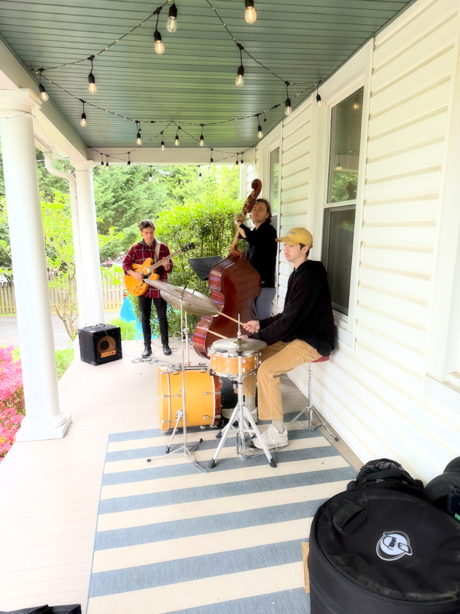
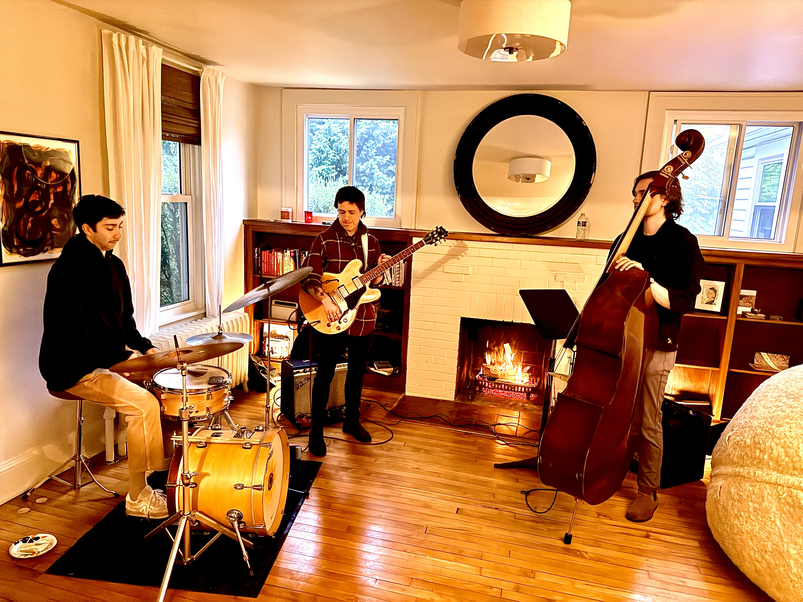

West Towson & Southland Hills Come Together
512 W Chesapeake Ave · Towson, MD 21204
A 1950s Hawaiian cocktail party on the porch. Tiki drinks, live jazz, grass skirts optional. Aloha shirts encouraged.
Live band on the wraparound porch. Same crew that rocked the spring party — now with a tropical setlist.
Mai Tais, Rum Punch, Blue Hawaiians, and non-alcoholic tropicals. Served in tiki mugs, obviously.
Tiki torches, paper lanterns, Hawaiian leis at the door. Aloha shirts and grass skirts encouraged.
Benefiting the Maryland Food Bank. Bring your neighbors, bring your spirit, bring your appetite.
Wednesday, July 22, 2026. The porch. The music. The tiki torches. Don't miss it.
🌺 Get on the ListOur spring party was a hit — rain and all. The porch kept us covered and the music kept us going. Live bass, guitar, and drums filled the neighborhood while we raised money for the Maryland Food Bank.
Thanks to everyone who made the first one unforgettable. Round two is going to be even better.


Both parties support the Maryland Food Bank. Our spring party raised funds and the summer tiki party will continue the tradition.
Donate to the Food Drive